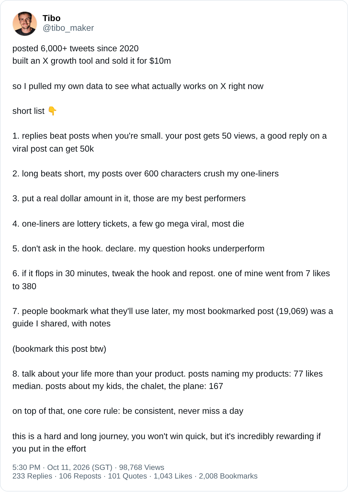

一句话总结
小号先去大帖下面写有料的回复；自己的帖子写长、写具体数字、用陈述句开头；30 分钟没起色就改钩子重发；多聊生活少推产品；最后，每天都发，别断。
这是 Tibo 在 2026 年 10 月 11 日发的一条“自我数据复盘”。他没有引用任何外部研究，所有结论都来自他自己账号的历史表现——所以它既有“实战一手数据”的价值，也有“单一样本、幸存者”的局限。下面按主题拆开看，并把评论区里的追问和反驳一并整理。
他凭什么说这些
开头两行就是他的“资历声明”：
“posted 6,000+ tweets since 2020 / built an X growth tool and sold it for $10m”
——2020 年至今发了 6000 多条推文；做了一个 X 增长工具，并以 1000 万美元卖掉。
接着他说：“so I pulled my own data to see what actually works on X right now”——于是拉了自己的数据，看看现在X 上到底什么有效。注意两点：① 1000 万美元出售、6000+ 条推文都是作者自述，本文未独立核实；② 有评论者 @daedalusa4 追问“1000 万是按营收还是利润算的？”，作者没有回答。
主题一：小号怎么拿到曝光——回复 > 发帖
第 1 条是整篇帖子在评论区被讨论最多的一条：
“replies beat posts when you're small. your post gets 50 views, a good reply on a viral post can get 50k”
——账号小的时候，回复比发帖更有用。你的帖子只有 50 次浏览，而在爆款帖下的一条好回复可能拿到 5 万。
逻辑很直白：小号自己的帖子没有分发基础，而爆款帖的评论区是“现成的流量池”。评论区里 @Ivrqen 的概括很到位：“Piggybacking existing momentum. Never try to create volume when you have zero size.”（借势已有的热度，体量为零时别想着自己造声量。）
作者在回复 @RobbyFrank（自称公司月入 50 万美元以上、但 X 上几乎没人知道他）时，也补了一句态度：
“yeah you definitely don't need to have an audience here”
——对，你完全不需要在这里有受众（也能把生意做成）。
也就是说，他并不认为 X 影响力是做生意的前提；这套方法是给“想在 X 上增长的人”的。
主题二：写什么、怎么写——长文、金额、陈述句
- 第 2 条 · 长胜过短：“my posts over 600 characters crush my one-liners”——他超过 600 字符的帖子，表现碾压一句话帖子。
- 第 3 条 · 写进真实的金额：“put a real dollar amount in it, those are my best performers”——带具体美元数字的帖子是他表现最好的一类。（这条帖子本身就以“$10m”开头。）
- 第 4 条 · 一句话帖是彩票：“one-liners are lottery tickets, a few go mega viral, most die”——少数爆得很大，大多数直接死掉。
- 第 5 条 · 钩子别提问，要断言：“don't ask in the hook. declare. my question hooks underperform”——以问句开头的钩子在他的数据里表现偏差。
关于“长文”，作者在回复中给出了更深一层的理由。@microDesignn 质疑：“现在的人没时间读长帖，除非第一行就抓住他们。”Tibo 回答：
“this is still what make people follow and buy from you / short form just generate engagement but rarely convert”
——长内容依然是让人关注你、从你这里买东西的原因；短内容只产生互动，很少带来转化。
这句话其实把“长 vs 短”的标准从“互动数据”换成了“转化”：短帖可以热闹，长帖才卖货。
主题三：发出去之后——30 分钟复盘与收藏
- 第 6 条 · 30 分钟扑街就改钩子重发：“if it flops in 30 minutes, tweak the hook and repost. one of mine went from 7 likes to 380”——他有一条从 7 个赞改成了 380 个赞。
- 第 7 条 · 人们收藏“以后要用”的东西：“my most bookmarked post (19,069) was a guide I shared, with notes”——他收藏最多的一条（19,069 次）是一份附带笔记的指南。紧接着他顺手来了一句“(bookmark this post btw)”——顺便收藏一下这条。
第 7 条的“夹带私货”被 @GoldilocksOrbit 一眼识破：“Sneaking the bookmark ask into number seven is cheeky.”（把求收藏塞进第 7 条，挺皮的。）效果也很明显：这条帖子的收藏数（2,008）约是点赞数（1,043）的两倍。
主题四：聊生活，而不是聊产品
“talk about your life more than your product. posts naming my products: 77 likes median. posts about my kids, the chalet, the plane: 167”
——多聊你的生活，少聊产品。提到我产品名的帖子，点赞中位数 77；聊孩子、木屋、飞机的帖子：167。
这是全帖唯一给出“中位数”对比的一条，也是最反直觉、对独立开发者最有用的一条：产品帖的中位数不到生活帖的一半。@serxzsz 的总结：“nobody wants the pitch, they want the life”（没人想看推销，大家想看生活）。
主题五：唯一的硬规则——不要断更
“on top of that, one core rule: be consistent, never miss a day”
——在这一切之上，一条核心规则：保持一致，一天都别落下。
他的结尾很克制：“this is a hard and long journey, you won't win quick, but it's incredibly rewarding if you put in the effort”——这是一段艰难而漫长的旅程，你不会很快赢，但只要投入，回报惊人。
补充：发帖约 3.5 小时后，他在自己的帖子下追加了一条回复，推荐自己的产品 SuperX（网页版和浏览器插件），称其对上述做法有“HUGE boost”；之后又补了一条，说 SuperX 插件对认真做 X 的人是“absolute must have”（回复 1、回复 2）。读者应意识到，这篇“数据复盘”本身也承担着为产品引流的作用——这和他第 8 条“少聊产品”形成了有趣的反差：产品放在评论区，而不是正文里。
评论区交锋
我扫描了约 125 条回复与 23 条引用帖（总回复 233 条）。作者本人在帖下共回复 5 条（2 条推荐 SuperX，3 条回应评论者）。主要声音如下：
1. 支持派：亲测“回复 > 发帖”有效
- @anubhav_builds：180 粉的账号测了一周，“78 replies got 7,927 views, 20 posts got 1,466”（78 条回复 7,927 浏览，20 条帖子 1,466 浏览）。
- @zig_andreas：让 AI 分析自己的 121 条帖子，回复占了他 67% 的曝光。
- @rafayariz：注册 4 天、100 粉，涨粉最多的一天是 24 小时内发了 132 条回复。
- @hboon：某天回复 33 条（平时 12–20 条），那天涨了 7 个关注。
（以上均为评论者自述，未核实。）
2. 补充派：回复要“有料”，以及算法的限制
- @BrettDavies 引用 X 开源排序代码指出一个限制：“replies from accounts a viewer doesn't follow are filtered out of For You. That 50k comes from people already reading the thread.”——非关注者的回复不会进入 For You 推荐，那 5 万浏览来自本就在看这个帖子的人。他在引用帖中又补充：5 万粉以下的小号，新发原创帖有冷启动扶持，所以 50 浏览的帖子“并非一出生就死”。（他对源码的解读未经本文核实。）
- @MimarogluMRM：第 1 条成立的前提是回复要加入作者和其他评论者都没提到的东西——一个数字、一个反例或一个简短的 how-to。
- @BeatAPIio：第 1、3、5 条其实是同一课：“specificity wins”（具体性取胜）。
- @maqibin：第 1 条和第 7 条可以合并——最好的回复就是一条“迷你可收藏帖”，脱离原帖也能教会别人点东西。
3. 质疑派
- 长文：@microDesignn 认为人们没时间读长帖——作者回应“短内容只带互动、很少转化”（见上文）。中文圈的 @voidJan 也直言“第 2 条我不认可……万粉左右还是尽量发短贴”，理由是粉丝基数不同。
- 30 分钟重发：@_masterphill：“feels like the hook isn't always the problem. sometimes the post just needs more time”——问题不一定在钩子，有时帖子只是需要更多时间。@mugabuilds 追问扑街的帖子是删掉再改发吗？作者未回答。
- never miss a day：@ThreeMoonsAreUp 认为“never miss a day”门槛太高；@Shaun_Yuan 也说自己很难做到。
- 幸存者偏差：@sciencedegens 一句“幸存者偏差罢了”；@max_bevza 更温和：“The real takeaway is to study your own analytics instead of blindly copying someone else's playbook”——真正该学的是研究你自己的数据，而不是照抄别人的打法。
- 流量 ≠ 客户：@PodcastPatrol 问：浏览最多的帖子带来的客户也最多吗？@simittomar8 问：新手和大号的规律会一样吗？作者都没有直接回答（他对 @microDesignn 的回复算是部分回应了“转化”问题）。
4. 中文圈的二次传播
这条帖子在中文 X 圈传播很广，多个引用帖做了翻译和“全文背诵”式转发。其中 @hainaduoer 的观察值得一提：“工具卖的是方法论，方法论得先在自己身上跑通”；@Aries_warrior_f 则提醒“诚恳输出有思考的观点更重要”。
我的笔记 / 可借鉴之处
- 最低成本、最高回报的动作是写好回复。但按 @BrettDavies 的说法，回复的曝光主要来自已经在看帖子的人，所以“好回复”要靠内容本身吸引人点进主页。
- 区分两类指标：短帖赚互动，长帖赚关注和转化——先想清楚你要哪个。
- 具体胜过空泛：真实金额、真实数字、陈述句钩子，本质都是具体性。
- 产品放后面，生活放前面：77 vs 167 的中位数差距是一个值得自己复测的假设。
- 别照抄，去复测：这 8 条都来自单一账号（约 22 万粉的大号，粉丝数为评论者所述）的自我统计，没有给出样本切分和方法。最好的用法，是把它当作一份待验证的假设清单，用你自己的数据跑一遍。
来源
- 原帖：https://x.com/tibo_maker/status/2109214987038216210
- 作者回复：回应 @microDesignn · 回应 @RobbyFrank · 回应 @hariprasad_bg · SuperX 推荐 1 · SuperX 推荐 2
- 评论与引用帖：见正文各处链接